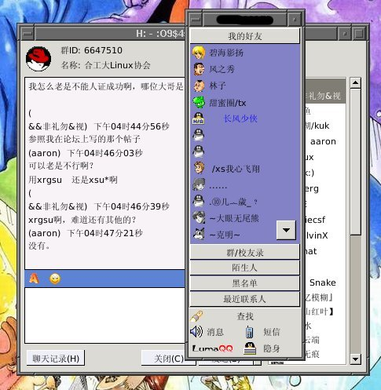
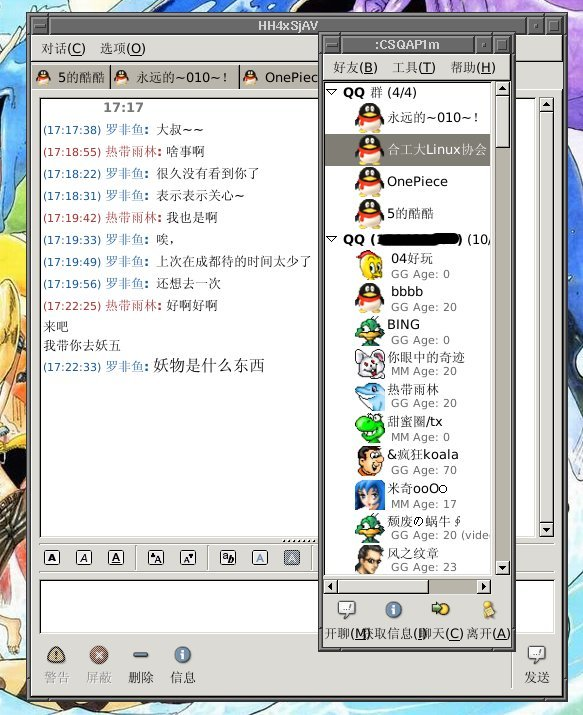
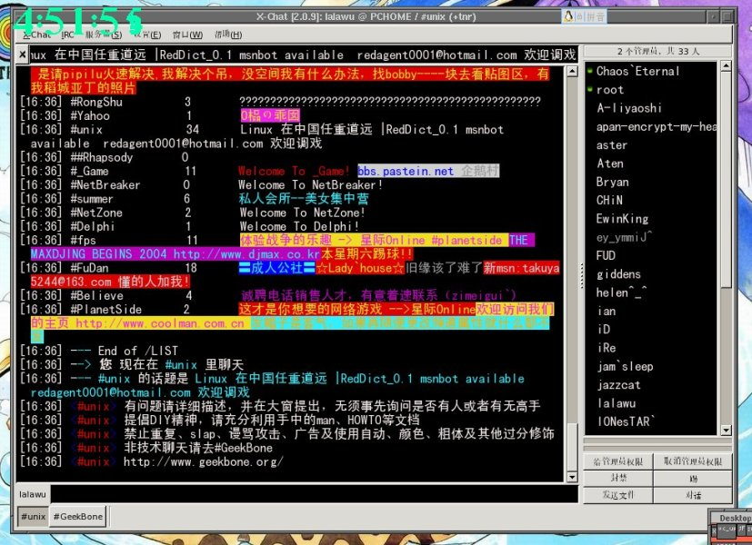
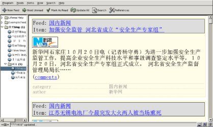

这确实是一个比较难选择的问题，所以两个我都用了，呵~
我没有摄像头，也没有视频聊天的嗜好。而且很少用 qq 传文件，所以无论 lumaqq 或 openq 对我来说都够用了。以前 lumaqq 和 fcitx 混用的时候会出现无法输入的情况，不过现在 fcitx 早已解决了这个问题。
如果真要做决定的话，可以这样考虑：如果你很想找回在 M$ 下用腾迅 qq 那种感觉，可以考虑用 lumaqq；而如果你对 gaim 的风格感兴趣，可能 openq 比较好。
我比较喜欢 openq 的大头像，用 openq 的时候多一些。可以看看它们的贴图。
下面是 lumaqq，和腾迅 qq 真的是非常的像。

还有 openq，大头像是不是很漂亮~

偶尔我也用 xchat 上 IRC，不过用的不多。

向为lumaqq和openq而努力的兄弟们致敬，是他们让我们用到了这么好的软件。
最近关注 blog 比较多，发现 rss 炒得挺火的。新华网和看天下都出了 rss 的阅读器，搞得我心理也痒痒地。看到 Linuxfire View 上介绍了 emacs 里实现 rss 的文章，便下了一个 newsticker 试试看。
原来 emacs 里只是实现了 rss 的跟踪，但是没有能很好的显示，emacs 还要借助 web-browser 来显示，比如 mozilla 或 netscape，这点比较麻烦。
不服气，又 baidu 了一下，发现在 Linux 里的 rss 新闻阅读器还蛮多的，比如 Liferea……赶紧下了一个。安装等等都很简单，现在也能很好的使用了，只可惜在 Liferea 阅读嵌入的 html 或图片不能显示中文，不知道怎么才能搞好……

国庆前吧，就知道了校内的电子竞技联盟(社团)要举办 CS、魔兽和星际的比赛。但是因为自觉技不如人，而且也没有太多的时间，再加上同寝室的也一直犹豫不决（我们寝室的很厉害的～），所以一直没有报名。寝室里面也没有太多的谈论。
参加比赛更多的得感谢另外一个班的同学，他在我们隔壁寝室，极力劝说我们寝室的三个人参加，加上跟我们同一个班的隔壁寝室的一个，一共五个人正好组个队。不断地游说，终成正果。那时候已经是十月十号左右了，报名的最后一天。结果我们报了名但因为 Money 不足无法马上交报名费，实在是很搞笑，因为当时太着急了。
战队取名 PLA (如有雷同，纯属巧合)，此时情况也蛮严峻的：除了我以前因为经常上 Public Serve 玩大地形（就是比赛地图了，cabble 之类――我玩 CS 比较早^_^）,对比赛地图比较熟悉之外，其他的四个人，几乎没怎么打过比赛地图（玩 bloodstrike、iceworld 这种垃圾太多了）。所以比赛对我们来说，就像一个战队的名字――Just 4 fun。
所以连续几天，我们一直在宿舍楼里面开 Serve，组队挑楼里的散兵。这招还蛮有成效，不仅对地图熟悉了（他们悟性很高的～），而且增强了自信……呵呵。
比赛 17 号开始，一共有 24 个参赛队（在这个地方，已经很不错了～）。共分 6 个小组，第一名出线。然后是两败制――对手不同，输够了两场就下，不够的继续，直到剩下四强――有两名是直接出线的“老牌强队”。
很快就到了 17 号，比赛早上 9:00 就开始了。比赛采用 24 局制，先到 12 局的换边。我们的第一个对手是 BWM，地图是 dust2。刚开始练习的时候他们很猛，搞得我们颇为紧张。不过连续刷新三次之后，情况大为不同。第一局拼刀，赢的有选匪或选警的优先权。没想到我们比较轻松地赢了。我又不是队长，为什么要我先说话呢－－那，那就先做匪吧。
CS 高手就不要往下看了，很％￥×◎＃的。
我们只有一套战术（已经很不错了），就是火力分配 A3、B2－－没有雷包的试探为主。这种平淡无奇的招数还蛮有成效，凭借枪法较好，一开始我们就打了他们 11：1，第一次感受到比赛的气氛，确实很爽。接着做警。也许是太放松了，而且战术没有跟上来。被他们打了 4:1――我们一直被压制，没有攒钱买重武器。约好攒了一局。结果有了重武器就是不同，完胜……最终结果 13:6
第二局的对手是 ?（问号），实力比第一局的稍强，主要是他们枪法明显的比第一局的好，暴头率高。地图是 Inferno。拼刀拼输了，做了匪。在 Inferno 做警我们研究得比较熟了，但做匪……比赛中，我们一直被压制，而且没有好好利用仅有的几次装备重武器的机会―― rush 他们一贯防守较弱的埋雷点，而且有一次已经拿下并安上了雷。但防守出现了问题，被他们一挑二，郁闷。结果是 10:2，很艰苦的“开头”，离结果很近的开头。做警的压力很大，现在才想起来，因为他们只要赢两局就 over 了。但当时我也不知道为什么，精力一直很集中，一直坚持我们训练好的位置，结果很成功，11:1 拿下。而且他们仅有的一局胜利只差一点点就被我们瓦解了（拆雷～），大翻盘……
本来说好吃了饭就打 D1（我们分在 D 组，进八强的最后一个对手），但从 11:30 一直等到 13:00，加上早上起得早，而且比赛精神高度集中，已经很累了。主办者只好宣布 D1 弃权，接着我们抽八强中的签，没想到刚抽完签，D1 到了，不过还是很遗憾地走开，这算一个花絮吧。
这时已经是下午了，我们的精力已经远远不如上午，累死掉了――主办方总是折磨人。结果八强中我们打得很差，毕竟是八强中的队伍了。而且中间出现了一些情况。我们中间有个队员以为输了第一局比赛就结束了，然后走了（后来我们才知道他是临时的急事，同学都来叫他了）。比赛凑不齐人，最后拉了一个班里面打得还可以的帮帮忙（他要是再来迟点，我们就算弃权～）。在各方面都不尽如人意的情况下，我们的八强旅程结束了……
因为实在是打得太差（精力都～），输得很惨。八强的情况还是不说了罢。不仅是枪法，还是扔雷（被闪雷闪怕了，呵～）――八强和小组赛水平明显不同。而且我们也是后面才知道，原本说好的参赛队伍中的队员必须来自同一个院系，但实际上主办方默认了不同院系的也可以自由组队，而我们所败给的对手都～认了吧……
本来只准备随随便便地去逛一圈，没想到却进了八强。呵呵，算意外的收获吧……
今天，实在是太累了……
Slackware 装好以后，声音一直出不来。当初因为要搞桌面，这方面也没有怎么在意。随着桌面进入了一个阶段，声音渐渐成了一个问题……
在今天成功之前，alsa 已经装过了，但声音一直出不来。最近一直很忙，时间太紧了，事情又担搁了下来。恰好今天有时间了，看准了，慢慢来……
alsa 安装需要内核源码包，首先确定 /usr/src/ 里面有了诸如 linux-2.4.26 这样的文件夹，不然的话还得找原来的安装盘(我是菜鸟，自然用 full 安装，东西只会多，不会少的^_^)。先确定自己的主板用的是什么声音芯片，比如我，是 Intel845PEI 的板子，声音芯片是 realtek ALC202A，那么可以上驱动之家下载 ALC202A for linux 的驱动。
解压缩 alsa-driver，进入 driver 目录。
<a id="make"></a>
intall<a id="./snddevices"></a>
然后是修改 /etc/modules.conf (有的是 conf.modules )，具体看 driver 里有什么就到 /etc/ 下修改什么……然后重启……
Intel 主板版载 ac 97 的安装过程细节在 Linuxsir 搜索下面的参考帖子。
因为我以前已经安装过 alsa 的驱动--我在 redhat 下成功发出声音的版本(包括 alsadriver，alsaconf)，后面又装了 ALC202A 的版本。所以我也不知道到底那个起了作用，参考了 Linuxsir 上某一个帖子，具体的我忘了。在终端下 man -k alsa，这些帮助足够了。然后用 root 执行 alsaconf。alsa 会执行搜索，然后列出机子上可供选择的声卡。差不多一路 ok 就可以了。甚至不用 重启。
xmms 已经在播放了，还没有声音？--在 Linux 下面是默认全部静音的，在终端下执行 aumix，自己调调看，出声音了吧？
有没有注意到，每次启动的时候都得使用 aumix 调声音。因为启动的时候没有加载 aumix，也就不可能 load 声音配置文件。如果每次都这样，人就会被郁闷死……下面给出 Fvwm 下用 aumix 启动加载声音设置的方法。
首先设置保存声音设置。先调出 aumix，然后设置好自己需要的声音大小，保存，在 ～/ 目录下会生成一个 .aumixrc 的声音配置文件。由 #aumix --help 可以知道，#aumix －L 是 load 用户 ~/.aumixrc 的声音设置（如果在 ~/ 没有 .aumixrc,则 load /etc 下的系统配置文件）。那么我们在 ~/.fvwm/.fvwm2rc 上面的 StartFunction 加上下面一行，启动 Fvwm 的时候加载声音设置：
+ I Exec exec aumix -L
这样就不用每次启动后都得用 aumix 设置声音了……
参考了 Linuxsir.org 上：在redhat7.3下驱动 intel 845主板ac97的经历
在 Netscape 里面（其实 mozilla 也一样的），在 blog 上发表文章以后，如果要修改，只能重新写过，没有办法接着上次写过的继续。因为一旦发表，按下修改的按钮，浏览器的输入栏就会变空白，不知道为什么。搞得每次在 Linux 下我要是想修改 blog 里面的东西，都得从新打过，累死了。
而以 IE 为内核的浏览器就没有这样的问题（比如我现在用的 MyIE2）。所以很多修改的工作都得放到 windows 下面来完成，而且这样转换来转换去也太麻烦了，不知道有什么方法可以解决。
到现在为止，还没有碰到过 Netscape 无法浏览的网页。最主要的是我所喜爱的网站 Netscape 都可以很好地浏览，小小庆贺一下。
WoWo~~~